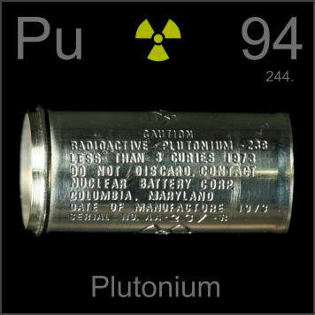

HOME
PREVIOUS
NEXT

Plutonium
Atomic Weight: 244[note]
Density: 19.816 g/cm3
Melting Point: 640 °C
Boiling Point: 3230 °C
This plutonium pacemaker battery case is empty--fortunately. If it were full, possession of it anywhere outside a body would be a crime. All no-longer-needed plutonium batteries must go home to Los Alamos.